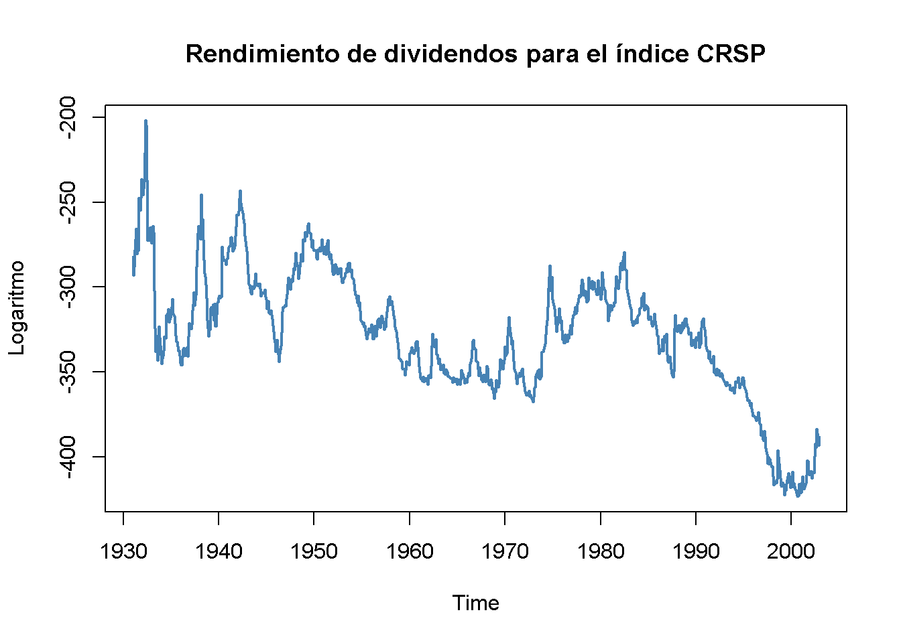

15.9 ¿Puedes ganarle al mercado? (Parte II)
El rendimiento por dividendo (la relación entre los dividendos actuales y el precio de la acción) se puede considerar como un indicador de dividendos futuros: Si una acción tiene un rendimiento por dividendo actual alto, se puede considerar infravalorada y se puede presumir que el precio de la acción aumenta en el futuro, lo que significa que los rendimientos excedentes futuros aumentan.
Esta presunción se puede examinar utilizando modelos ADL de exceso de rendimiento, donde los rezagos del logaritmo del rendimiento por dividendo de la acción sirven como regresores adicionales.
Desafortunadamente, una inspección gráfica de la serie temporal del logaritmo del rendimiento por dividendo arroja dudas sobre el supuesto de que la serie es estacionaria, lo cual, como se discutió en el Capítulo 15.7, es necesario para realizar inferencias estándar en un análisis de regresión.
# graficar el logaritmo de la serie de rendimiento de dividendos
plot(StockReturns[, 2],
col = "steelblue",
lwd = 2,
ylab = "Logaritmo",
main = "Rendimiento de dividendos para el índice CRSP")
El estadístico de prueba de Dickey-Fuller para una raíz unitaria autorregresiva en un modelo AR(\(1\)) con deriva proporciona más evidencia de que la serie podría ser no estacionaria.
# prueba de raíz unitaria en el PIB usando 'ur.df()' del paquete 'urca'
summary(ur.df(window(StockReturns[, 2],
c(1960,1),
c(2002, 12)),
type = "drift",
lags = 0))
#>
#> ###############################################
#> # Augmented Dickey-Fuller Test Unit Root Test #
#> ###############################################
#>
#> Test regression drift
#>
#>
#> Call:
#> lm(formula = z.diff ~ z.lag.1 + 1)
#>
#> Residuals:
#> Min 1Q Median 3Q Max
#> -14.3540 -2.9118 -0.2952 2.6374 25.5170
#>
#> Coefficients:
#> Estimate Std. Error t value Pr(>|t|)
#> (Intercept) -2.740964 2.080039 -1.318 0.188
#> z.lag.1 -0.007652 0.005989 -1.278 0.202
#>
#> Residual standard error: 4.45 on 513 degrees of freedom
#> Multiple R-squared: 0.003172, Adjusted R-squared: 0.001229
#> F-statistic: 1.633 on 1 and 513 DF, p-value: 0.2019
#>
#>
#> Value of test-statistic is: -1.2777 0.9339
#>
#> Critical values for test statistics:
#> 1pct 5pct 10pct
#> tau2 -3.43 -2.86 -2.57
#> phi1 6.43 4.59 3.78Se usa window() para obtener observaciones desde enero de 1960 hasta diciembre de 2012 únicamente.
Dado que el valor \(t\) para el coeficiente en el logaritmo rezagado del rendimiento por dividendo es \(-1.27\), la hipótesis de que el coeficiente verdadero es cero no puede rechazarse, incluso en el nivel de significancia de \(10\%\).
Sin embargo, es posible examinar si el rendimiento por dividendo tiene poder predictivo para rendimientos en exceso utilizando sus diferencias en un modelo de ADL(\(1\), \(1\)) y ADL(\(2\), \(2\)) (recuerde que diferenciar una serie con un raíz unitaria produce una serie estacionaria), aunque estas especificaciones del modelo no corresponden al razonamiento económico mencionado anteriormente. Por lo tanto, también se estima una regresión ADL(\(1\), \(1\)) utilizando el nivel del logaritmo del rendimiento por dividendo.
Es decir, se estiman tres especificaciones diferentes:
\[\begin{align*} excess \, returns_t =& \, \beta_0 + \beta_1 excess \, returns_{t-1} + \beta_3 \Delta \log(dividend yield_{t-1}) + u_t \\ \\ excess \, returns_t =& \, \beta_0 + \beta_1 excess \, returns_{t-1} + \beta_2 excess \, returns_{t-2} \\ &+ \, \beta_3 \Delta \log(dividend yield_{t-1}) + \beta_4 \Delta \log(dividend yield_{t-2}) + u_t \\ \\ excess \, returns_t =& \, \beta_0 + \beta_1 excess \, returns_{t-1} + \beta_5 \log(dividend yield_{t-1}) + u_t \\ \end{align*}\]
# ADL(1,1) (1ª diferencia de rentabilidad por dividendo logarítmico)
CRSP_ADL_1 <- dynlm(ExReturn ~ L(ExReturn) + d(L(ln_DivYield)),
data = StockReturns,
start = c(1960, 1), end = c(2002, 12))
# ADL(2,2) (1ª y 2ª diferencia de rentabilidad por dividendo logarítmico)
CRSP_ADL_2 <- dynlm(ExReturn ~ L(ExReturn) + L(ExReturn, 2)
+ d(L(ln_DivYield)) + d(L(ln_DivYield, 2)),
data = StockReturns,
start = c(1960, 1), end = c(2002, 12))
# ADL(1,1) (nivel de rendimiento de dividendos logarítmicos)
CRSP_ADL_3 <- dynlm(ExReturn ~ L(ExReturn) + L(ln_DivYield),
data = StockReturns,
start = c(1960, 1), end = c(1992, 12))# recopilar errores estándar robustos
rob_se_CRSP_ADL <- list(sqrt(diag(sandwich(CRSP_ADL_1))),
sqrt(diag(sandwich(CRSP_ADL_2))),
sqrt(diag(sandwich(CRSP_ADL_3))))Luego se puede generar una representación tabular de los resultados usando stargazer().
stargazer(CRSP_ADL_1, CRSP_ADL_2, CRSP_ADL_3,
title = "Modelos ADL de la existencia de rendimientos excesivos mensuales",
header = FALSE,
type = "latex",
column.sep.width = "-5pt",
no.space = T,
digits = 3,
column.labels = c("ADL(1,1)", "ADL(2,2)", "ADL(1,1)"),
dep.var.caption = "Variable dependiente: Rendimientos excesivos en el índice ponderado por valor CSRP",
dep.var.labels.include = FALSE,
covariate.labels = c("$excess return_{t-1}$",
"$excess return_{t-2}$",
"$1^{st} diff log(dividend yield_{t-1})$",
"$1^{st} diff log(dividend yield_{t-2})$",
"$log(dividend yield_{t-1})$",
"Constant"),
se = rob_se_CRSP_ADL) | Variable dependiente: Rendimientos excesivos en el índice ponderado por valor de CSRP | |||
| ADL(1,1) | ADL(2,2) | ADL(1,1) | |
| (1) | (2) | (3) | |
| excess returnt-1 | 0.059 | 0.042 | 0.078 |
| (0.158) | (0.162) | (0.057) | |
| excess returnt-2 | -0.213 | ||
| (0.193) | |||
| 1st diff log(dividend yieldt-1) | 0.009 | -0.012 | |
| (0.157) | (0.163) | ||
| 1st diff log(dividend yieldt-2) | -0.161 | ||
| (0.185) | |||
| log(dividend yieldt-1) | 0.026** | ||
| (0.012) | |||
| Constant | 0.309 | 0.372* | 8.987** |
| (0.199) | (0.208) | (3.912) | |
| Observations | 516 | 516 | 396 |
| R2 | 0.003 | 0.007 | 0.018 |
| Adjusted R2 | -0.001 | -0.001 | 0.013 |
| Residual Std. Error | 4.338 (df = 513) | 4.337 (df = 511) | 4.407 (df = 393) |
| F Statistic | 0.653 (df = 2; 513) | 0.897 (df = 4; 511) | 3.683** (df = 2; 393) |
| Note: | *p<0.1; **p<0.05; ***p<0.01 | ||
Table 15.3: Modelos ADL de la existencia de rendimientos excesivos mensuales
Para los modelos (1) y (2), ninguna de las estadísticas individuales \(t\) sugieren que los coeficientes sean diferentes de cero. Además, no se puede rechazar la hipótesis de que ninguno de los rezagos tiene poder predictivo de rendimientos excesivos en ningún nivel común de significancia (una prueba \(F\) que los rezagos tienen poder predictivo no rechaza para ambos modelos).
Las cosas son diferentes para el modelo (3). El coeficiente en el nivel del logaritmo del rendimiento por dividendo es diferente de cero en el nivel de \(5\%\) y también se rechaza la prueba de \(F\). Pero se debe sospechar: El alto grado de persistencia en la serie de rendimiento de dividendos probablemente hace que esta inferencia sea dudosa porque los estadísticos de \(t\) y \(F\) pueden seguir distribuciones que se desvían considerablemente de sus distribuciones teóricas de muestra grande, de modo que en el valor crítico habitual los valores no se pueden aplicar.
Si el modelo (3) fuera útil para predecir rendimientos en exceso, los pronósticos pseudo fuera de la muestra basados en (3) deberían al menos superar los pronósticos de un modelo de solo intercepción en términos del EPRCM de muestra. Se puede realizar este tipo de comparación utilizando el código R a manera de las aplicaciones del Capítulo 15.8.
# fechas de finalización de la muestra
EndOfSample <- as.numeric(window(time(StockReturns), c(1992, 12), c(2002, 11)))
# inicializar pronósticos matriciales
forecasts <- matrix(nrow = 2,
ncol = length(EndOfSample))
# bucle de estimación al final de las fechas de muestra
for(i in 1:length(EndOfSample)) {
# modelo de estimación (3)
mod3 <- dynlm(ExReturn ~ L(ExReturn) + L(ln_DivYield), data = StockReturns,
start = c(1960, 1),
end = EndOfSample[i])
# estimar modelo de solo intercepción
modconst <- dynlm(ExReturn ~ 1, data = StockReturns,
start = c(1960, 1),
end = EndOfSample[i])
# datos de muestra para el pronóstico de un período por delante
t <- window(StockReturns, EndOfSample[i], EndOfSample[i])
# calcular pronóstico
forecasts[, i] <- c(coef(mod3) %*% c(1, t[1], t[2]), coef(modconst))
}# reunir datos
d <- cbind("Excess Returns" = c(window(StockReturns[,1], c(1993, 1), c(2002, 12))),
"Model (3)" = forecasts[1,],
"Intercept Only" = forecasts[2,],
"Always Zero" = 0)
# calcular EPRCM
c("ADL model (3)" = sd(d[, 1] - d[, 2]),
"Intercept-only model" = sd(d[, 1] - d[, 3]),
"Always zero" = sd(d[,1] - d[, 4]))
#> ADL model (3) Intercept-only model Always zero
#> 4.043757 4.000221 3.995428La comparación indica que el modelo (3) no es útil, ya que el modelo de solo intercepto lo supera en términos de EPRCM de muestra. Un modelo que pronostica el exceso de rendimiento siempre en cero tiene un EPRCM de muestra aún más bajo. Este hallazgo es consistente con la hipótesis de eficiencia de forma débil que establece que toda la información disponible públicamente se contabiliza en los precios de las acciones de manera que no hay forma de predecir los precios futuros de las acciones o los rendimientos en exceso utilizando observaciones pasadas, lo que implica que la relación significativa percibida e indicada por el modelo (3) es incorrecta.
Resumen
Este capítulo trató temas introductorios en el análisis de regresión de series de tiempo, donde las variables generalmente se correlacionan de una observación a la siguiente, un concepto denominado correlación serial. Se presentaron varias formas de almacenar y graficar datos de series de tiempo usando R y se usaron para el análisis informal de datos económicos.
Se han introducido los modelos AR y ADL. Asimismo, se han aplicado en el contexto de la previsión de series de tiempo macroeconómicas y financieras utilizando R. La discusión también incluyó el tema de la selección de la duración de los rezagos. Se mostró cómo configurar una función simple que calcula el CIB para un objeto suministrado, como un modelo.
También se ha visto cómo escribir un código R simple para realizar y evaluar pronósticos. De igual forma, se demostraron algunos enfoques más sofisticados para realizar pronósticos pseudo fuera de la muestra para evaluar el poder predictivo de un modelo para los resultados futuros no observados de una serie, para comprobar la estabilidad del modelo y comparar diferentes modelos.
Además, se abordaron algunos aspectos más técnicos como el concepto de estacionariedad. Esto incluyó aplicaciones para probar una raíz unitaria autorregresiva con la prueba de Dickey-Fuller y la detección de una ruptura en la función de regresión poblacional usando el estadístico \(QLR\). Para ambos métodos, la distribución del estadístico de prueba relevante no es normal, incluso en muestras grandes. Respecto a la prueba de Dickey-Fuller, se han utilizado las instalaciones de generación de números aleatorios de R para producir evidencia de esto por medio de una simulación de Monte-Carlo y el uso motivado de los cuantiles tabulados.
De manera adicional, estudios empíricos sobre la validez de las hipótesis de eficiencia de forma débil y fuerte que se presentan en las aplicaciones ¿Puedes ganarle al mercado? Parte I y II se han reproducido utilizando R.
En todas las aplicaciones del presente capítulo, la atención se centró en pronosticar resultados futuros en lugar de estimar las relaciones causales entre las variables de series de tiempo. Sin embargo, los métodos necesarios para este último son bastante similares. El capítulo 16 está dedicado a la estimación de los llamados efectos causales dinámicos.